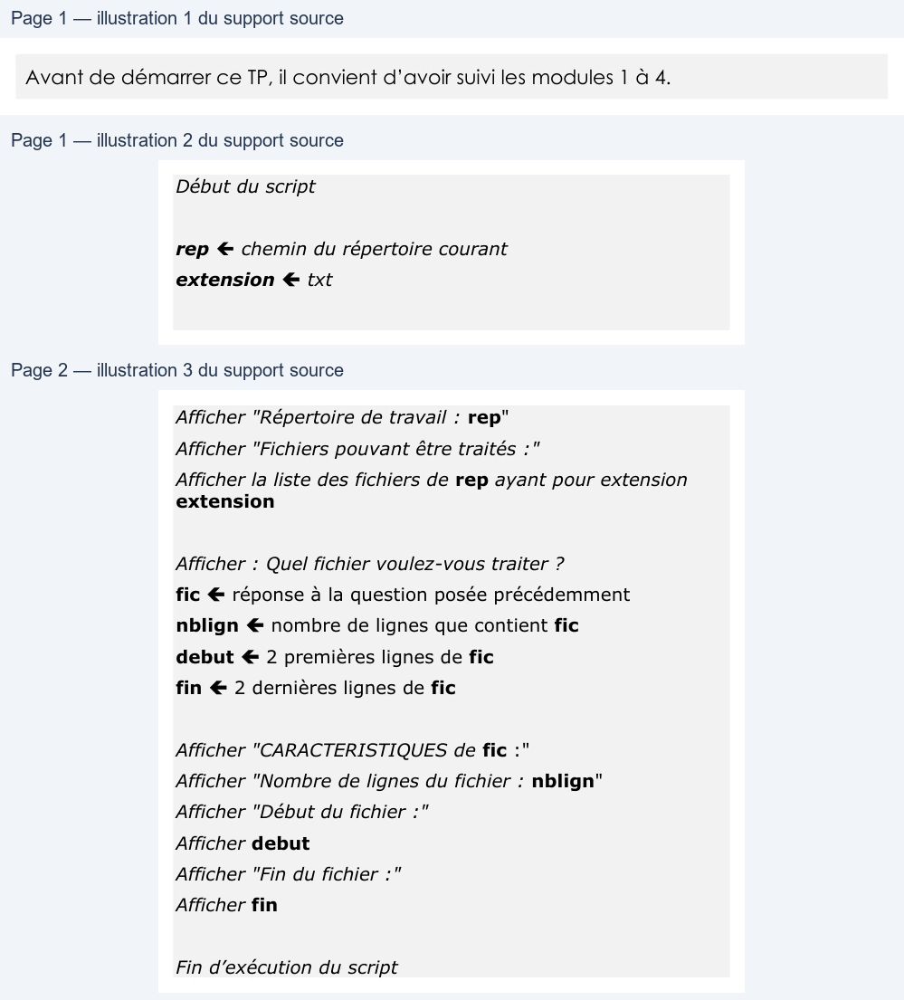

Transcription du document du Drive TSSR. La mise en forme est adaptée au Web ; les compléments IA du portail sont présentés séparément.
Initiation au scripting Bash
TP1 du Module 04 - Les variables dans les scripts
Avant de démarrer ce TP, il convient d’avoir suivi les modules 1 à 4.
Identifier et utiliser les variables d’environnement du système afin de répondre à un besoin donné.
Créer un script utilisant des variables à partir d’un algorithme.
1. Utiliser les commandes appropriées afin d’afficher des variables
De nombreuses variables sont paramétrées et manipulées par le système afin de faciliter l’accès à certaines
données ou informations.
• L’une d’entre-elles précise le nom du fichier qui enregistre chacune de vos saisies de commande. On parle de fichier d’historique des commandes. Mais quel est le nom de cette variable ? (indice : traduire ‘historique’ en anglais) • Une autre indique à quels emplacements le système Linux peut trouver les fichiers exécutables/binaires installés sur le système, comme ls par exemple. Comment se nomme-t ’elle ? (indice : a été abordée dans un module précédent l’arborescence des systèmes Linux et notamment les dossiers de binaires, servez-vous en !) 2. Réaliser un script
Créer un fichier de script ‘script_M4TP1.sh’ à partir du pseudo-code ci-dessous.
L’objectif est d’afficher les fichiers dans votre dossier courant comportant une certaine extension (.txt, .sh,
.odt ou .docx par ex.). Puis, pour l’un d’entre eux, de visualiser une partie du contenu.
Début du script
rep chemin du répertoire courant
extension txt
ENI Ecole Informatique
Initiation au scripting Bash
Afficher "Répertoire de travail : rep"
Afficher "Fichiers pouvant être traités :"
Afficher la liste des fichiers de rep ayant pour extension
extension
Afficher : Quel fichier voulez-vous traiter ?
fic réponse à la question posée précédemment
nblign nombre de lignes que contient fic
debut 2 premières lignes de fic
fin 2 dernières lignes de fic
Afficher "CARACTERISTIQUES de fic :"
Afficher "Nombre de lignes du fichier : nblign"
Afficher "Début du fichier :"
Afficher debut
Afficher "Fin du fichier :"
Afficher fin
Fin d’exécution du script
Sachant que :
•
La variable extension porte le nom de l’extension de fichiers souhaitée
•
La variable rep récupère la valeur de votre position actuelle dans l’arborescence, donc le résultat
d’une commande
•
La variable fic contient le nom du fichier saisi par l’utilisateur qui exécute le script (il doit donc être
invité à saisir un nom de fichier existant)
ENI Ecole Informatique
